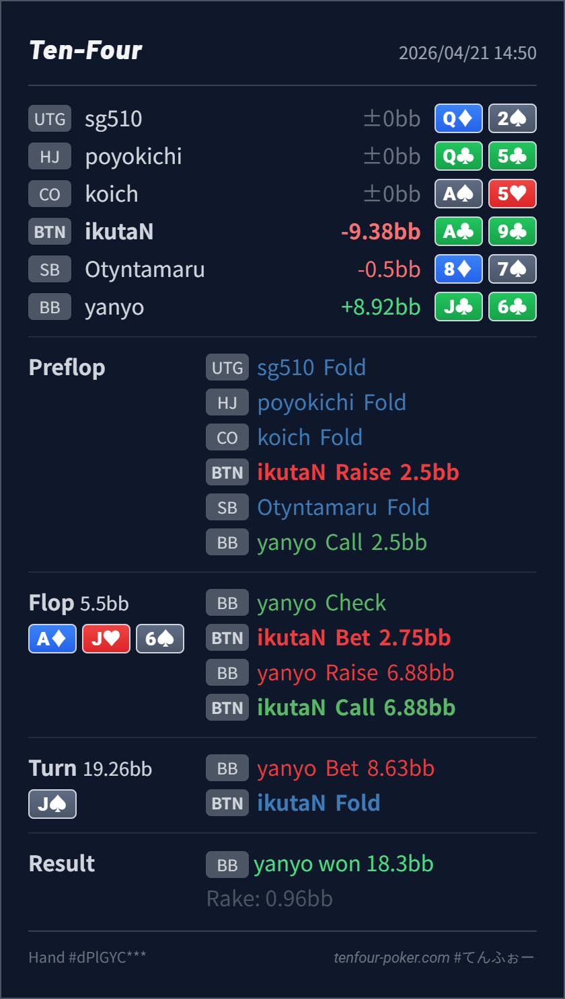

Preflop
良いA♣9♣ は BTN open の十分自然な上側です。
主論点は、BTN open で入った single-raised pot の A♦ J♥ 6♠ に対して、A♣9♣ を flop の c-bet / call bucket にどう置き、J♠ turn の barrel でどこまで続けるかです。結論は、preflop open、flop c-bet、BB の x/r に対する call は大筋で自然で、いちばん良いのは turn fold です。BB の x/r -> bet はこの runout でかなり value density が上がりやすく、A♣9♣ は two pair まで改善していても、まだ Jx と full house 寄りにしっかり踏まれます。
A♣9♣J♣6♣A♦ J♥ 6♠ / J♠J♠ turn で無理に bluff-catch を続けなかった fold は良い整理です。A♣9♣ open は素直です。BB defend に対しても、A♦ J♥ 6♠ は top pair と backdoor club を持つので flop c-bet は十分成立します。x/r は bluff 皆無とまでは言いませんが、rainbow の A-high board なので、Jx、A6、66、J6s のような value と、少数の KQ/QT/T9 系に寄りやすい node です。A♣9♣ はここで fold するには強すぎ、3bet するには薄いので call がいちばん収まりやすいです。J♠ は BB の flop value をかなり押し上げます。Jx は trips 以上になり、66/J6 は full house、A6 もまだ value として残ります。反対に、自然な bluff 側は大きく増えません。A♣9♣ は board pair で two pair になっていますが、これは「強い bluff-catcher」に近い位置づけです。相手の line 全体が value-heavy に寄るなら、ここで守りすぎない方が長期ではぶれにくいです。A♣9♣J♣6♣2.5BB, BB callA♦ J♥ 6♠ / J♠2.75BB, BB raise 6.88BB, BTN call8.63BB, BTN foldJ♣6♣ wins
良いA♣9♣ は BTN open の十分自然な上側です。
A♦ J♥ 6♠良いA♣9♣ は top pair で、c-bet も x/r call も成立する middle-strong bucket です。
J♠かなり良いA♣9♣ は two pair に見えても、line 全体に対しては上位 bluff-catcher 寄りです。
| 論点 | その場で起きがちな見え方 | どこがズレたか | 次回の基準 |
|---|---|---|---|
flop x/r を受けた後の A9 | top pair なので、raise で守るか、逆に弱キッカーだからすぐ苦しく感じる | A♣9♣ はその中間です。BB の x/r に対して fold は降りすぎですが、raise は bluff と worse value を落として strong value に寄せやすいです。 | top pair middle kicker で x/r を受けたら、まず fold するには強すぎるか と raise すると誰が残るか を分けて考える |
| paired turn の two pair | board pair で two pair に見えるので、まだ bluff-catch できそうに感じる | J♠ は自分の hand を見た目より強くする一方で、BB の flop value をさらに厚くするカードでもあります。line 全体で見れば、こちらの改善より相手の改善の方が大きいです。 | paired turn では 自分が何に改善したか だけでなく、相手の value がどれだけ増えたか を先に数える |
| ストリート | その時点の見え方 | 実ハンドの位置づけ | 評価 | その場の一手 |
|---|---|---|---|---|
| Preflop | BTN open に対する BB defend には suited connector、suited gapper、broadway、弱い Ax が広く残ります。 | A♣9♣ は BTN open の十分自然な上側です。 | 良い | 2.5BB open で問題ありません。 |
Flop A♦ J♥ 6♠ | BB の check range には Ax, Jx, 6x, backdoor broadway, suited trash が広く残ります。x/r まで行くと value 濃度はかなり上がりますが、bluff が完全に消えるわけではありません。 | A♣9♣ は top pair で、c-bet も x/r call も成立する middle-strong bucket です。 | 良い | c-bet は自然です。x/r に対しては raise せず call に留めるのが素直です。 |
Turn J♠ | BB の flop x/r value はこのカードでかなり強化されます。Jx, 66, J6, 一部 A6 が中心で、bluff はそこまで増えません。 | A♣9♣ は two pair に見えても、line 全体に対しては上位 bluff-catcher 寄りです。 | かなり良い | ここは fold でよいです。改善した見た目 より 相手 range の強化 を優先して整理したい spot です。 |
| River |
x/r を受けた top pair middle kicker は、fold でも raise でもなく call に置くとレンジが整いやすいです。x/r -> turn bet に対しては、two pair まで改善したから続行 ではなく、line 全体の value density を見る方がぶれにくいです。x/r は理論より value-heavy に寄りやすいので、turn の fold は exploit 的にもかなり噛み合っています。x/r を広く打ちすぎるタイプなら、A♣9♣ の flop call 自体はしっかり残してよいです。降ろしすぎより、turn 以降で丁寧に絞る方が実戦向きです。